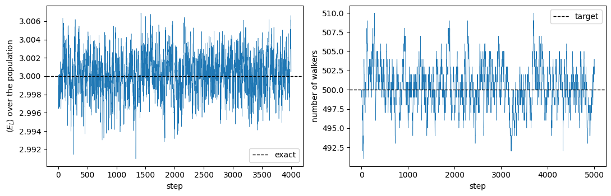
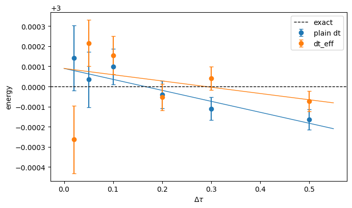

16. Diffusion Monte Carlo#
Executable companion to chapter 15.
Chapter 14 ended with \(E_{\rm VMC} = 3.000549 \pm 0.000049\) for two electrons in a two-dimensional quantum dot, against Taut’s exact \(3\). The residual \(5.5\times10^{-4}\) is eleven standard errors wide and entirely systematic: it is what a two-parameter trial function cannot represent, and neither longer sampling nor better optimisation removes it.
Diffusion Monte Carlo removes it by projecting rather than guessing. Replacing \(t\) by \(-i\tau\) turns the Schrodinger equation into
whose formal solution filters every excited component away like \(e^{-(E_n-E_0)\tau}\). In coordinate space this is a diffusion equation with a source term, and a branching random walk simulates it directly.
The catch is that the source is the potential, and \(1/r_{12}\) is unbounded. Importance sampling fixes it: propagate \(f = \Psi_T\Phi\) instead, which gives
with the same quantum force \(\bm F = 2\nabla\Psi_T/\Psi_T\) and the same local energy \(E_L\) as in chapter 13 – and the ground-state energy is the mixed estimator \(\langle E_L\rangle_f\), the same average of the same function, over a different distribution.
Everything here uses dmc.py, which imports the trial function, local energy and
quantum force unchanged from vmc.py.
import sys
sys.path.insert(0, "../BookManybody/BookMaterial/Programs")
import math
import numpy as np
import matplotlib.pyplot as plt
import dmc
from vmc import TAUT_ENERGY, vmc_importance
plt.rcParams["figure.figsize"] = (7.0, 4.2)
print("exact (Taut) ", TAUT_ENERGY)
print("VMC (chapter 14) ", dmc.E_VMC)
print("guiding function alpha =", dmc.ALPHA_OPT, " beta =", dmc.BETA_OPT)
exact (Taut) 3.0
VMC (chapter 14) 3.000549
guiding function alpha = 1.0 beta = 0.4
16.1. 1. The algorithm in its original form#
No trial function, no drift, no accept/reject: walkers diffuse freely and are branched with weight \(\exp[-\Delta\tau(V - E_T)]\). For the one-dimensional harmonic oscillator, \(V = x^2/2\), this works and the population growth alone gives the energy.
naive = dmc.naive_dmc_harmonic(n_steps=3000)
print(f"E = {naive['energy']:.6f} +/- {naive['error']:.6f} (exact {naive['exact']})")
E = 0.497322 +/- 0.002792 (exact 0.5)
That works because \(x^2/2\) is smooth and bounded below. Put \(1/r_{12}\) in the exponent instead and the weights diverge as two walkers approach: one lucky configuration acquires an enormous weight, spawns an enormous number of copies, and the whole population descends from it. The variance is unbounded and no amount of computer time helps.
Importance sampling replaces \(V\) by \(E_L\), which the cusp condition keeps finite. That is the whole argument, and it is why the algorithm of this cell is never the algorithm that is used.
16.2. 2. The quantum dot#
One run at \(\Delta\tau = 0.05\) with 500 walkers, started from a short variational Monte Carlo run at the same parameters. Two independent estimators come out: the mixed estimator \(\langle E_L\rangle_f\), and the growth estimator, which is the average of the trial energy \(E_T\) needed to hold the population steady.
result = dmc.dmc(n_walkers=500, n_steps=4000, time_step=0.05,
rng=np.random.default_rng(2024))
print(f"acceptance {result['acceptance']:.1%}")
print(f"mean population {result['mean_population']:.0f}")
print(f"var(E_L) {result['variance']:.5f}")
print(f"correlation time {result['tau']:.2f}")
print()
print(f"mixed estimator E = {result['energy']:.6f} +/- {result['error']:.6f}")
print(f"growth estimator E = {result['growth']:.6f} +/- {result['growth_error']:.6f}")
print(f"exact {TAUT_ENERGY:.6f}")
acceptance 99.5%
mean population 500
var(E_L) 0.00223
correlation time 7.18
mixed estimator E = 3.000216 +/- 0.000115
growth estimator E = 2.999778 +/- 0.000619
exact 3.000000
The two agree, as they must. The mixed estimator has by far the smaller error – it measures the eigenvalue directly, while the growth estimator infers it from a population that is itself noisy – and it is the one that gets quoted.
fig, (left, right) = plt.subplots(1, 2, figsize=(11.0, 3.6))
left.plot(result["series"], lw=0.4)
left.axhline(TAUT_ENERGY, color="k", ls="--", lw=1, label="exact")
left.set_xlabel("step")
left.set_ylabel(r"$\langle E_L\rangle$ over the population")
left.legend()
right.plot(result["population"], lw=0.4)
right.axhline(500, color="k", ls="--", lw=1, label="target")
right.set_xlabel("step")
right.set_ylabel("number of walkers")
right.legend()
fig.tight_layout()
plt.show()

The population wanders around its target but is held there by the feedback in
with a deliberately weak \(\kappa = 0.05\): \(E_T\) sits in the branching exponent, so a violent controller injects its own fluctuations into the simulation.
16.3. 3. The time step is the systematic error#
The short-time Green’s function is exact only as \(\Delta\tau\to0\), so a calculation that quotes one time step has not finished. Run at several and extrapolate.
effective_time_step replaces \(\Delta\tau\) in the branching factor by
which corrects the branching for the moves the accept/reject step threw away.
time_steps = [0.5, 0.3, 0.2, 0.1, 0.05, 0.02]
scans = {}
for label, use_eff in (("plain dt", False), ("dt_eff", True)):
energies, errors = [], []
print(label)
print(f"{'dt':>8s} {'energy':>12s} {'error':>10s} {'accept':>8s} "
f"{'dteff/dt':>9s} {'tau':>6s}")
for dt in time_steps:
out = dmc.dmc(n_walkers=500, n_steps=4000, time_step=dt,
effective_time_step=use_eff,
rng=np.random.default_rng(2024))
energies.append(out["energy"])
errors.append(out["error"])
print(f"{dt:8.3f} {out['energy']:12.6f} {out['error']:10.6f} "
f"{out['acceptance']:8.1%} "
f"{out['effective_time_step']/dt:9.3f} {out['tau']:6.1f}")
fit = dmc.extrapolate(time_steps, energies, errors)
scans[label] = (np.array(energies), np.array(errors), fit)
print(f" extrapolated {fit['intercept']:.6f} +/- {fit['intercept_error']:.6f}"
f" slope {fit['coefficients'][1]:+.5f}")
print()
plain dt
dt energy error accept dteff/dt tau
0.500 2.999835 0.000050 87.2% 1.000 1.2
0.300 2.999889 0.000057 93.6% 1.000 1.7
0.200 2.999959 0.000068 96.4% 1.000 2.3
0.100 3.000098 0.000089 98.6% 1.000 4.2
0.050 3.000034 0.000137 99.5% 1.000 10.1
0.020 3.000142 0.000162 99.9% 1.000 16.3
extrapolated 3.000090 +/- 0.000064 slope -0.00055
dt_eff
dt energy error accept dteff/dt tau
0.500 2.999927 0.000050 87.2% 0.805 1.2
0.300 3.000040 0.000058 93.6% 0.899 1.7
0.200 2.999946 0.000065 96.4% 0.942 2.3
0.100 3.000155 0.000096 98.7% 0.978 5.2
0.050 3.000216 0.000115 99.5% 0.991 7.2
0.020 2.999736 0.000167 99.9% 0.998 18.3
extrapolated 3.000090 +/- 0.000094 slope -0.00031
grid = np.linspace(0.0, 0.55, 100)
for label, (energies, errors, fit) in scans.items():
line = plt.errorbar(time_steps, energies, yerr=errors, fmt="o", capsize=3,
label=label)
plt.plot(grid, fit["coefficients"][0] + fit["coefficients"][1] * grid,
lw=1, color=line[0].get_color())
plt.axhline(TAUT_ENERGY, color="k", ls="--", lw=1, label="exact")
plt.xlabel(r"$\Delta\tau$")
plt.ylabel("energy")
plt.legend()
plt.tight_layout()
plt.show()

Three things to read off.
The acceptance rate stays above 87% even at \(\Delta\tau = 0.5\) – that is what the drift buys, and it is unchanged from chapter 13. The \(\Delta\tau_{\rm eff}\) correction is substantial at the largest time step and negligible below 0.05, exactly as it should be.
The correlation time in steps grows as the time step shrinks. What decorrelates a walker is imaginary time: 4000 steps at \(\Delta\tau = 0.02\) cover eighty units of \(\tau\) where the same number at \(\Delta\tau = 0.5\) cover two thousand. A small time step is not free.
And the bias itself is minute, a few parts in \(10^4\) across a factor of twenty-five in \(\Delta\tau\). That is a statement about the guiding function, not about the method: the time-step error comes from the commutators the Trotter factorisation drops, and those vanish when \(\Psi_T\) is an eigenfunction. At \(\alpha = 1\) the local energy of this dot is very nearly constant, so there is almost nothing for the factorisation to get wrong.
16.4. 4. A deliberately bad guiding function#
\(\alpha = 0.80\), \(\beta = 0.10\) is a long way from the variational minimum. In chapter 13 that would simply be a worse answer. Here it is not.
poor_vmc = vmc_importance(0.80, 0.10, n_cycles=60000, time_step=0.5,
rng=np.random.default_rng(7))
print(f"VMC with the same trial function: {poor_vmc['energy']:.6f} "
f"+/- {poor_vmc['error']:.6f} (variance {poor_vmc['variance']:.4f})")
print()
poor_steps = [0.1, 0.05, 0.02, 0.01]
energies, errors = [], []
print(f"{'dt':>8s} {'energy':>12s} {'error':>10s} {'tau':>6s}")
for dt in poor_steps:
out = dmc.dmc(alpha=0.80, beta=0.10, n_walkers=2000, n_steps=3000,
time_step=dt, rng=np.random.default_rng(2024))
energies.append(out["energy"])
errors.append(out["error"])
print(f"{dt:8.3f} {out['energy']:12.6f} {out['error']:10.6f} {out['tau']:6.1f}")
poor_fit = dmc.extrapolate(poor_steps, energies, errors)
print(f" extrapolated {poor_fit['intercept']:.6f} "
f"+/- {poor_fit['intercept_error']:.6f} "
f"slope {poor_fit['coefficients'][1]:+.5f}")
VMC with the same trial function: 3.363877 +/- 0.005019 (variance 0.6227)
dt energy error tau
0.100 3.025847 0.000966 8.0
0.050 3.014878 0.001555 20.5
0.020 3.002270 0.002293 52.8
0.010 3.005206 0.002222 50.6
extrapolated 3.001071 +/- 0.002338 slope +0.24931
Variationally this trial function is a disaster – 3.36 against an exact 3, worse than Hartree-Fock in a 42-orbital basis. Projected, it gives the right answer.
The price shows up everywhere else: an error bar some twenty-five times larger despite four times the walkers, correlation times three times longer, and a time-step slope a few hundred times steeper, so that \(\Delta\tau = 0.5\) is no longer usable at all. A poor guiding function costs computer time and demands a smaller time step. It does not cost accuracy.
16.5. 5. Is it a population-control bias?#
A systematic error that does not move with \(\Delta\tau\) often turns out to move with the number of walkers instead, because the feedback that stabilises the population correlates the walkers with each other. Worth checking rather than assuming.
print(f"{'walkers':>8s} {'good guide':>24s} {'poor guide':>24s}")
for n in (250, 500, 1000, 2000):
good = dmc.dmc(n_walkers=n, n_steps=3000, time_step=0.1,
rng=np.random.default_rng(2024))
bad = dmc.dmc(alpha=0.80, beta=0.10, n_walkers=n, n_steps=3000,
time_step=0.1, rng=np.random.default_rng(2024))
print(f"{n:8d} {good['energy']:16.6f} +/- {good['error']:.6f} "
f"{bad['energy']:14.6f} +/- {bad['error']:.6f}")
walkers good guide poor guide
250 2.999874 +/- 0.000131 3.024045 +/- 0.003611
500 3.000158 +/- 0.000099 3.021299 +/- 0.002181
1000 2.999966 +/- 0.000062 3.022742 +/- 0.001509
2000 2.999934 +/- 0.000044 3.025847 +/- 0.000966
Neither central value drifts over a factor of eight in the population, while the error bars fall by the expected \(\sqrt 8 \approx 2.8\). The population-control bias is below the statistical resolution here, so the residual in the poor-guide column is time-step error – which section 3 removes by extrapolating.
16.6. 6. Where this leaves the quantum dot#
method |
energy |
error |
|---|---|---|
Hartree-Fock, 42 orbitals |
3.161921 |
\(1.6\times10^{-1}\) |
MP2, 42 orbitals |
3.027038 |
\(2.7\times10^{-2}\) |
CCSD, 42 orbitals |
3.013626 |
\(1.4\times10^{-2}\) |
VMC, optimised (chapter 14) |
3.000549(49) |
\(5.5\times10^{-4}\) |
DMC, extrapolated |
3.000090(64) |
\(9.0\times10^{-5}\) |
exact (Taut) |
3.000000 |
— |
The basis-set methods are limited by the basis: no finite sum of oscillator products reproduces the cusp at \(r_{12} = 0\). Variational Monte Carlo removes the basis but is limited by the ansatz. Diffusion Monte Carlo removes the ansatz too, and what is left is statistics.
16.7. What is not here#
The two-electron singlet has a symmetric spatial wave function, so \(\Psi_T\) is strictly positive and there are no nodes. For fermions in general there are, the projector converges on the nodeless bosonic state instead, and the fermionic signal decays like \(e^{-(E_0^{\rm F}-E_0^{\rm B})\tau}\) – the sign problem. The fixed-node approximation constrains \(\Phi\) to vanish where \(\Psi_T\) does, which restores a positive \(f\) and gives a variational upper bound, exact only if the nodes are. It is the one error in this chapter that cannot be removed by spending more computer time, and improving it means improving the nodes of the trial function rather than its amplitude.
Which is where flexible parametrisations – neural-network wave functions, optimised with the gradient and the stochastic reconfiguration of chapter 14 – come in.